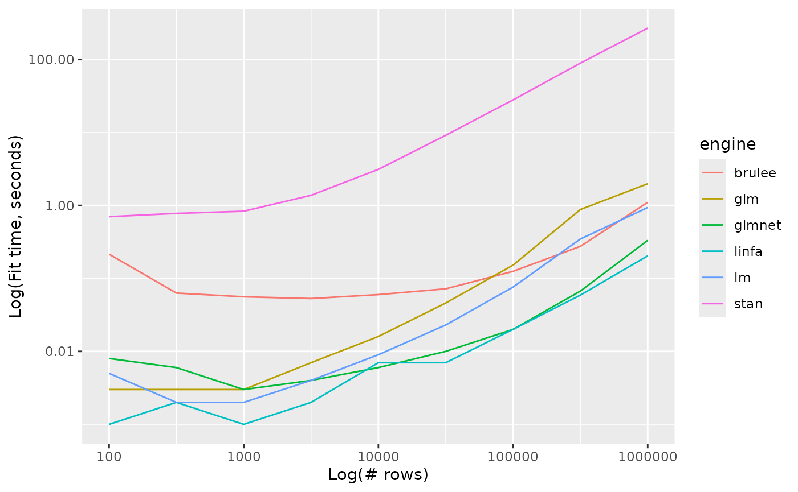
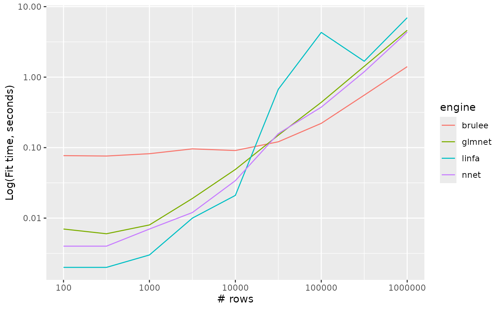
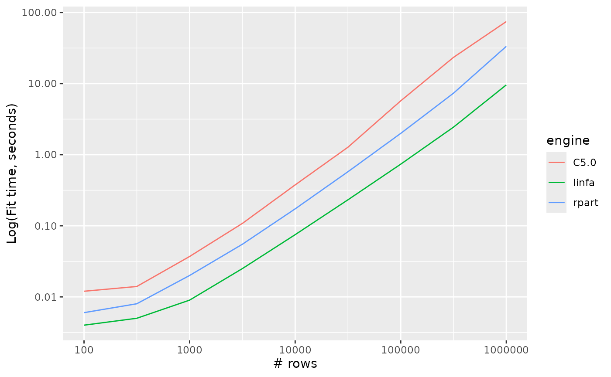
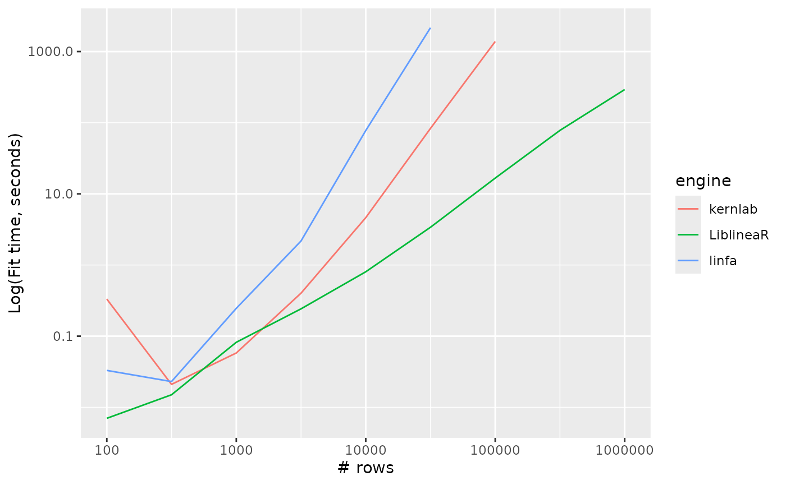

The rinfa parsnip extension implements bindings to linfa, a machine learning library written entirely in Rust. While linfa is somewhat less flexible than other modeling engines that tidymodels supports, it can often fit a good bit faster than other available engines. We’ll use this article to back that claim up.
While this article will benchmark fit times, it doesn’t measure model performance nor vary the kinds of features and correlation structures among them; in reality, the choice of modeling engine must weigh both computational and predictive performance in context.
First, loading tidymodels and the rinfa extension package:
rinfa supports a number of model types:
- Linear regression
- Logistic regression
- Multinomial regression
- Decision trees
- Naive bayes
- Support vector machines
For each of those model types, we’ll benchmark the time to fit the model to a dataset of varying size, and compare the time-to-fit across each modeling engine.
Linear regression
For this first model type, I’ll write out the code that I’m using to benchmark the model fits. After that, I’ll just plot the results without showing the code.
First, setting parameters for the experiment—each modeling engine will fit models for each of the following number of rows:
Now, we’ll grab the different possible engines from parsnip’s model environment. parsnip supports fitting models with the following engines:
engines <- unique(get_model_env()[["linear_reg_fit"]]$engine)
engines
#> [1] "lm" "glm" "glmnet" "stan" "spark" "keras" "brulee" "linfa"Now, we set up a data.frame() to drop experimental
results in and load the packages needed to fit all of these different
models.
linear_reg_timings <-
data.frame(
engine = character(),
n_row = integer(),
timing = numeric()
)
x <- lapply(engines, function(engine) {
pkgs <- required_pkgs(linear_reg(engine = engine))
lapply(pkgs, require, character.only = TRUE)
})For each engine, we put together a model specification, and then
iterate through various numbers of rows in training data. After
generating a dataset with that many rows, we measure how long each model
fit takes and store it in the linear_reg_timings data
frame.
for (engine in engines) {
spec <- linear_reg(engine = engine)
if (engine == "glmnet") {
spec <- spec %>% set_args(penalty = 0)
}
if (engine == "spark") {
next
}
for (n_row in n_rows) {
# first, check that a previous run didn't take too long;
# if it did, go ahead and skip it
longest_fit <- linear_reg_timings[linear_reg_timings$engine == engine,]
longest_fit <- max(longest_fit$timing)
if (longest_fit > 600) next
set.seed(1)
d <- sim_regression(n_row)
# The following blurb is atypical in a tidymodels workflow, but
# feels worth including to give each engine a fair shot. We extract the
# "encoding," i.e. whether the model takes (matrix) x and y arguments or
# a data.frame and a formula. The elapsed time to convert from data.frame
# to matrix or vice versa is non-negligible for quicker model fits.
#
# Normally, a user would just call whichever fit interface feels more
# comfortable for them and tidymodels would take care of the conversion.
fit_encoding <- get_fit("linear_reg")
fit_encoding <- fit_encoding[fit_encoding$engine == engine, "value"]
fit_encoding <- fit_encoding$value[[1]]$interface
if (!identical(fit_encoding, "matrix")) {
timing <- system.time(fit(spec, outcome ~ ., d))
} else {
x <- as.matrix(d[-1])
timing <- system.time(fit_xy(spec, x = x, y = d$outcome))
}
linear_reg_timings <-
bind_rows(
linear_reg_timings,
data.frame(engine = engine, n_row = n_row, timing = timing[["elapsed"]])
)
}
}
linear_reg_timings %>%
ggplot() +
aes(x = n_row, y = timing, colour = engine, group = engine) +
geom_line() +
scale_y_log10() +
scale_x_log10() +
labs(x = "Log(# rows)", y = "Log(Fit time, seconds)")
Logistic regression
logistic_reg_timings %>%
ggplot() +
aes(x = n_row, y = timing, colour = engine, group = engine) +
geom_line() +
scale_y_log10() +
scale_x_log10() +
labs(x = "# rows", y = "Log(Fit time, seconds)")Multinomial regression
multinom_reg_timings %>%
ggplot() +
aes(x = n_row, y = timing, colour = engine, group = engine) +
geom_line() +
scale_y_log10() +
scale_x_log10() +
labs(x = "# rows", y = "Log(Fit time, seconds)")
Decision trees
decision_tree_timings %>%
ggplot() +
aes(x = n_row, y = timing, colour = engine, group = engine) +
geom_line() +
scale_y_log10() +
scale_x_log10() +
labs(x = "# rows", y = "Log(Fit time, seconds)")
Naive bayes
naive_Bayes_timings %>%
ggplot() +
aes(x = n_row, y = timing, colour = engine, group = engine) +
geom_line() +
scale_y_log10() +
scale_x_log10() +
labs(x = "# rows", y = "Log(Fit time, seconds)")Support vector machines
svm_linear_timings %>%
ggplot() +
aes(x = n_row, y = timing, colour = engine, group = engine) +
geom_line() +
scale_y_log10() +
scale_x_log10() +
labs(x = "# rows", y = "Log(Fit time, seconds)")